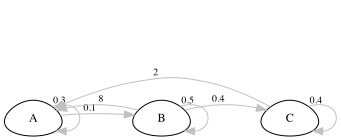
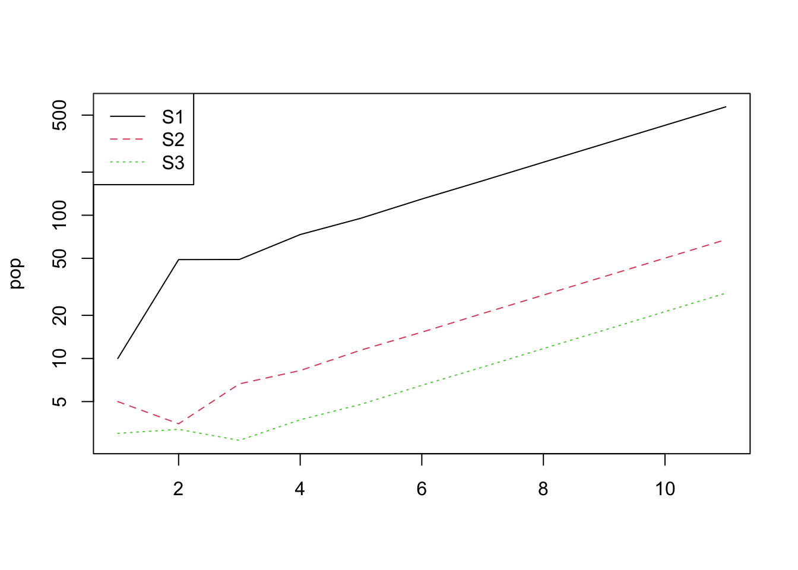

11 Matrix population modelling
11.1 Background
Matrix population models are powerful and widely used tools in population ecology that offer a comprehensive framework for studying the dynamics of structured populations. Unlike simple growth models that assume homogeneous populations, matrix population models take into account the variation in vital rates, such as birth, death, and growth rates, across different life stages or age classes. These models are particularly well-suited for species with distinct life stages, such as plants with seedlings, juveniles, and adults, or animals with different age classes. Matrix population models use transition matrices to represent the relationships between different age classes and how individuals move from one stage to another over time. By incorporating demographic data and life-history traits, matrix population models provide a more realistic and detailed understanding of population dynamics, making them invaluable for predicting the future trends of populations and assessing their vulnerability to environmental changes and management actions.
This practical aims to give you a good understanding of the basics of their construction and use.
Learning outcomes:
- Competence in constructing life cycle diagrams to represent the life history of real (or theoretical) organisms.
- Understanding how to parameterise life-cycle diagrams and use them to produce a matrix population model.
- Competence in using R to calculate a population growth rate and project a population.
- Understanding how to connect these results to a management question.
- Understanding the logic of “in silico experiments” to investigate a biological question (mathematical modelling).
11.2 Your task
First, think of an organism you would like to model the dynamics of. It could be a mammal, a bird, a fish, insect or tree … real or fantasy.
Think about their life cycle, and draw it as a life cycle diagram with circles indicating the stages and arrows representing transitions between stages (e.g. growth) and reproduction. Keep it simple if you can (max. 3 stages).
Things to think about:
- Is it age based or stage based?
- How many stages are there? Can you simplify (e.g. instead of age in years, you could use life stage)
- If using stages, how are stages defined? E.g. by size, by development, etc.
- Are the survival and fecundity higher in earlier or later life?
- Does the organism ever skip stages?
- Can the organism move “backwards” through the life cycle?
- Next to the arrows, write values for survival probability and fecundity (number of babies) using your biological knowledge. It is fine to use “ballpark” estimates.
Here’s an example for a fictional organism.

- Now you can turn this diagram into a matrix population model by filling in a square of survival/fecundity values.
The life cycle shown above looks like this:
\[ A = \begin{bmatrix}0.3&8&2 \\0.1&0.5&0 \\0&0.4&0.4 \\\end{bmatrix} \]
11.3 Using R for matrix modelling
Working with matrices is very tedious in Excel. However, in R you can use this information to predict the future dynamics of the population, and estimate population growth rate, and generation time etc.
Open up RStudio, and let’s see if we can predict future dynamics. First you will need to install a package called popdemo.
You only need to install packages once. After that you can load the package for use by using the library function.
You can put your matrix into R like in the example below (change the numbers to match YOUR model). If your model has fewer, or more, stages then you will need to modify the code a bit. Ask for help if you get stuck.
11.4 Projecting the population
And now you can use the project function to project what happens to the population, then plot it. Look at what happens if you log or don’t log the y-axis. First you need to define an initial starting population structure.
In my example, I have 3 stages, so I have 3 values for the initial population sizes. Then I use the popdemo function project to do a population projection for 10 time steps.
Take a look at pr, the projected population. This gives you the total population size, and below that the population sizes in each stage.
## 1 deterministic population projection over 10 time intervals.
##
## [1] 18.0000 55.7000 58.4300 85.2570 111.5643 151.4946 203.2634 273.8278 368.4012 495.8572 667.3121You can access the population sizes of the different stages using vec(pr).
## S1 S2 S3
## [1,] 10.0000 5.00000 3.000000
## [2,] 49.0000 3.50000 3.200000
## [3,] 49.1000 6.65000 2.680000
## [4,] 73.2900 8.23500 3.732000
## [5,] 95.3310 11.44650 4.786800
## [6,] 129.7449 15.25635 6.493320
## [7,] 173.9609 20.60267 8.699868
## [8,] 234.4093 27.69742 11.721013
## [9,] 315.3442 37.28964 15.767375
## [10,] 424.4552 50.17924 21.222808
## [11,] 571.2161 67.53514 28.560821Let’s plot this…
pop <- vec(pr)
matplot(pop, type = "l", log = "y")
legend("topleft", legend = colnames(pop),
col = 1:ncol(pop), lty = 1:ncol(pop))
You should see that the population increases exponentially. The population growth rate is the so-called “dominant eigenvalue” of the matrix A.
We can ask R for the eigen values and eigen vectors. These are the population growth rate (\(\lambda\)) and the stable stage distribution (SSD) and the reproductive values (RV) of the different stages. SSD is the expected proportion of individuals in the different stage classes at equilibrium (i.e. the long-term time frame) and RV is the expected number of future offspring by individuals in each stage.
You can see that in this case, using my example values the population is growing 34.58% per year.
## $lambda
## [1] 1.345824
##
## $ss
## [1] 0.85599732 0.10120281 0.04279987
##
## $rv
## [1] 0.4987772 5.2163301 1.054693911.5 Elasticity
Elasticity analysis is a way of analysing a matrix model to identify the most important transitions to population growth. This is very important in management and conservation when we ask questions like, “which parts of the lifecycle should we focus on to preserve the population?”. The mathematics of this are beyond this course, but in a nutshell, we are adding a small value to the elements of the matrix one-at-a-time and asking what difference this makes to population growth rate (lambda). We then express that as a proportion, so that the elasticities sum up to one and are easier to interpret. They can be calculated easily in R.
## [,1] [,2] [,3]
## [1,] 0.09517264 0.30005511 0.03172421
## [2,] 0.33177932 0.19612796 0.00000000
## [3,] 0.00000000 0.03172421 0.01341654What transition is most important to population growth, according to the above?
11.6 Life table response experiment (LTRE)
These don’t have much to do with life tables (sorry, that’s confusing!). The idea is very simple: you run “experiments” on your matrix model by asking “what if” questions. For example, what would happen if we could increase survival of the juveniles by 20%? what would happen if adults are hunted more, and thus have a decreased survival by 60%? what would happen if we provided supplemental food to reproducing females, and increase fecundity by 50%? etc. Use your imagination!
In practice, we do that simply by modifying the matrix model. In the following, I am looking at the effect of increasing fertility in adult and senescent individuals by 50%:
A <- matrix(c(
0.3, 8.00*1.5, 2.00*1.5,
0.1, 0.50, 0.00,
0.0, 0.40, 0.40
),
byrow = TRUE, nrow = 3
)
popdemo::eigs(A, what = "lambda")## [1] 1.546586## [,1] [,2] [,3]
## [1,] 0.08514005 0.32540118 0.028380016
## [2,] 0.35378119 0.16901684 0.000000000
## [3,] 0.00000000 0.02838002 0.00990070511.7 Your turn…
Work through the above process for your own species.
- Do a projection,
- calculate (and interpret) lambda and elasticity,
- do an LTRE
11.7.1 An evolutionary experiment
You can think of lambda (population growth rate) as being a measure of fitness. Imagine that some of your population had a mutation that caused them to have, say, 1 extra baby, but at the expense of reduced survival in one of the younger stages. Would this mutation persist in the population? Do an LTRE to find out!
11.7.2 Questions
- In the graph showing log-transformed population size through time, what is the significance of the lines being straight after the transient phase?
- Explain how an elasticity analysis of a matrix model can be used to inform the management of a threatened species.
- What are some of the assumptions of a matrix population model? (Hint: some are similar to the assumptions of exponential/geometric growth models)